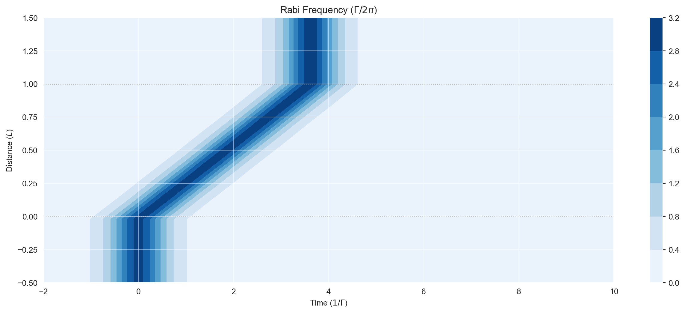
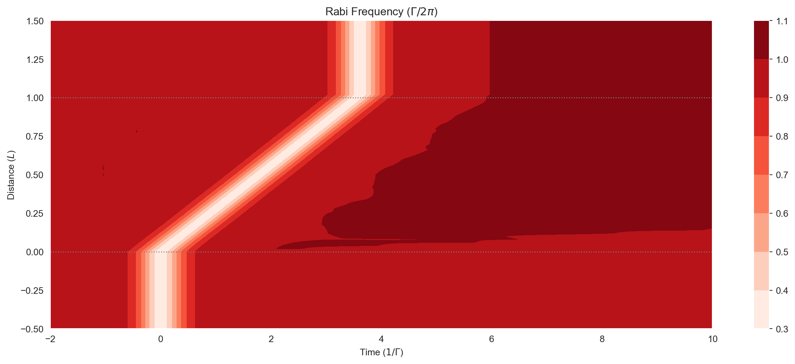
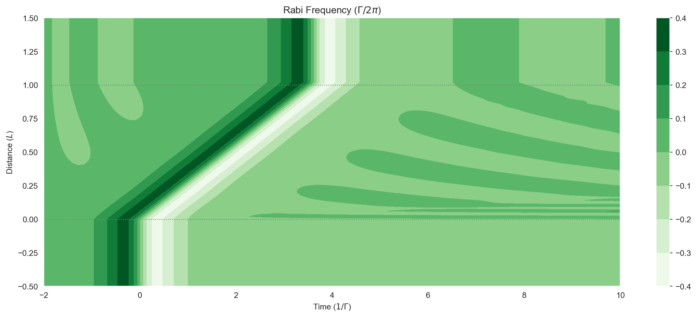

import numpy as npHyperfine Structure: Sech Pulse 2π, q=1 — Self-Induced Transparency
\(^{87}\mathrm{Rb}\) driven on the \(5S_{1/2} F=1 \rightarrow 5p_{1/2} F=1\) transition.
from clerq import hyperfine
Rb87_5s12_F1 = hyperfine.LevelF(I=1.5, J=0.5, F=1)
Rb87_5s12_F2 = hyperfine.LevelF(I=1.5, J=0.5, F=2) # Needed for decay
Rb87_5p12_F1 = hyperfine.LevelF(I=1.5, J=0.5, F=1)
atom1e = hyperfine.Atom1e(element="Rb", isotope="87")
atom1e.add_F_level(Rb87_5s12_F1)
atom1e.add_F_level(Rb87_5s12_F2)
atom1e.add_F_level(Rb87_5p12_F1)NUM_STATES = atom1e.get_num_mF_levels()
print(NUM_STATES)11ENERGIES = atom1e.get_energies()
print(ENERGIES)[0.0, 0.0, 0.0, 0.0, 0.0, 0.0, 0.0, 0.0, 0.0, 0.0, 0.0]# Tune to be on resonance with the F1 -> F1 transition
DETUNING = 0
print(DETUNING)0FIELD_CHANNELS = atom1e.get_coupled_levels(F_level_idxs_a=(0,), F_level_idxs_b=(2,))
print(FIELD_CHANNELS)[[0, 8], [0, 9], [0, 10], [1, 8], [1, 9], [1, 10], [2, 8], [2, 9], [2, 10]]q = 1 # Field polarisation
FIELD_FACTORS = atom1e.get_clebsch_hf_factors(
F_level_idxs_a=(0,), F_level_idxs_b=(2,), q=q
)
print(FIELD_FACTORS)[ 0. 0. 0. 0.28867513 -0. -0.
0. 0.28867513 0. ]strength_factor = np.sum(FIELD_FACTORS**2)
print(strength_factor)0.166666666666666571/6 is the strength factor S_11
hf_factor = np.max(FIELD_FACTORS)
print(hf_factor)0.2886751345948128DECAY_CHANNELS = atom1e.get_coupled_levels(F_level_idxs_a=(0, 1), F_level_idxs_b=(2,))
print(DECAY_CHANNELS)[[0, 8], [0, 9], [0, 10], [1, 8], [1, 9], [1, 10], [2, 8], [2, 9], [2, 10], [3, 8], [3, 9], [3, 10], [4, 8], [4, 9], [4, 10], [5, 8], [5, 9], [5, 10], [6, 8], [6, 9], [6, 10], [7, 8], [7, 9], [7, 10]]DECAY_FACTORS = atom1e.get_decay_factors(F_level_idxs_a=(0, 1), F_level_idxs_b=(2,))
print(DECAY_FACTORS)[ 0.28867513 -0.28867513 0. 0.28867513 -0. -0.28867513
0. 0.28867513 -0.28867513 0.70710678 0. 0.
0.5 0.5 -0. 0.28867513 0.57735027 0.28867513
-0. 0.5 0.5 0. 0. 0.70710678]INITIAL_STATE = (
[1.0 / 3.0] * 3 # s12_F1
+ [0.0 / 5.0] * 5 # s12_F2
+ [0.0] * 3
) # p12_F1
print(INITIAL_STATE)[0.3333333333333333, 0.3333333333333333, 0.3333333333333333, 0.0, 0.0, 0.0, 0.0, 0.0, 0.0, 0.0, 0.0]sech_fwhm_conv = 1.0 / 2.6339157938
WIDTH = 1.0 * sech_fwhm_conv # [τ]
print("WIDTH", WIDTH)
n = 2.0 # For a pulse area of nπ
AMPL = n / WIDTH / (2 * np.pi) # Pulse amplitude [2π Γ]
AMPL *= 1 / hf_factor
print("ampl", AMPL)WIDTH 0.3796628587572578
ampl 2.9043077704595337mb_solve_json = """
{{
"atom": {{
"decays": [
{{
"channels": {decay_channels},
"rate": 0.0,
"factors": {decay_factors}
}}
],
"energies": {energies},
"fields": [
{{
"coupled_levels": {field_channels},
"factors": {field_factors},
"detuning": {detuning},
"detuning_positive": true,
"label": "probe",
"rabi_freq": 1.0,
"rabi_freq_t_args": {{
"ampl": {ampl},
"centre": 0.0,
"width": {width}
}},
"rabi_freq_t_func": "sech"
}}
],
"num_states": {num_states},
"initial_state": {initial_state}
}},
"t_min": -2.0,
"t_max": 10.0,
"t_steps": 100,
"z_min": -0.5,
"z_max": 1.5,
"z_steps": 100,
"z_steps_inner": 1,
"num_density_z_func": "square",
"num_density_z_args": {{
"on": 0.0,
"off": 1.0,
"ampl": 1.0
}},
"interaction_strengths": [
2.5e2
],
"velocity_classes": null,
"method": "mesolve",
"opts": {{
"method": "bdf",
"atol": 1e-8,
"rtol": 1e-6,
"nsteps": 1e2
}},
"savefile": "mbs-Rb87_5s12_5p12_F11_q1-sech-2pi"
}}
""".format(
num_states=NUM_STATES,
energies=ENERGIES,
initial_state=INITIAL_STATE,
detuning=DETUNING,
field_channels=FIELD_CHANNELS,
field_factors=FIELD_FACTORS.tolist(),
decay_channels=DECAY_CHANNELS,
decay_factors=DECAY_FACTORS.tolist(),
ampl=float(AMPL),
width=WIDTH,
)from clerq import mb_solve
mbs = mb_solve.MBSolve().from_json_str(mb_solve_json)Omegas_zt, states_zt = mbs.mbsolve(recalc=True)Saving MBSolve to mbs-Rb87_5s12_5p12_F11_q1-sech-2pi.quimport matplotlib.pyplot as plt
%matplotlib inline
import seaborn as sns
sns.set_style("darkgrid")
import numpy as npfig = plt.figure(1, figsize=(16, 6))
ax = fig.add_subplot(111)
# cmap_range = np.linspace(0.0, 12, 11)
cf = ax.contourf(
mbs.tlist,
mbs.zlist,
np.abs(mbs.Omegas_zt[0] / (2 * np.pi)),
# cmap_range,
cmap=plt.cm.Blues,
)
ax.set_title(r"Rabi Frequency ($\Gamma / 2\pi $)")
ax.set_xlabel(r"Time ($1/\Gamma$)")
ax.set_ylabel("Distance ($L$)")
ax.grid(alpha=0.5)
ax.set_axisbelow(False)
for y in [0.0, 1.0]:
ax.axhline(y, c="grey", lw=1.0, ls="dotted")
plt.colorbar(cf);
fig = plt.figure(1, figsize=(16, 6))
ax = fig.add_subplot(111)
# cmap_range = np.linspace(0.0, 1.0e-3, 11)
cf = ax.contourf(
mbs.tlist,
mbs.zlist,
np.abs(mbs.populations_field(0, upper=False)),
# cmap_range,
cmap=plt.cm.Reds,
)
ax.set_title(r"Rabi Frequency ($\Gamma / 2\pi $)")
ax.set_xlabel(r"Time ($1/\Gamma$)")
ax.set_ylabel("Distance ($L$)")
for y in [0.0, 1.0]:
ax.axhline(y, c="grey", lw=1.0, ls="dotted")
plt.colorbar(cf);
fig = plt.figure(1, figsize=(16, 6))
ax = fig.add_subplot(111)
# cmap_range = np.linspace(0.0, 1.0e-3, 11)
cf = ax.contourf(
mbs.tlist,
mbs.zlist,
np.imag(mbs.coherences_field(0)),
# cmap_range,
cmap=plt.cm.Greens,
)
ax.set_title(r"Rabi Frequency ($\Gamma / 2\pi $)")
ax.set_xlabel(r"Time ($1/\Gamma$)")
ax.set_ylabel("Distance ($L$)")
for y in [0.0, 1.0]:
ax.axhline(y, c="grey", lw=1.0, ls="dotted")
plt.colorbar(cf);